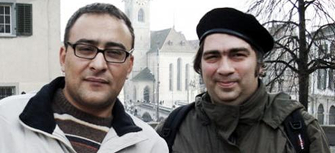

НАМ УГРОЖАЛИ СМЕРТЬЮ
Отношение к визитам
азербайджанцев в Армению
в Азербайджане неоднозначно.
Так случилось и в этот раз.
Визит писателя Алекпера Алиева
и композитора Эльмира Мирзоева
в рамках международного проекта
стал поводом резких высказываний
председателя ООК Акифа Наги.
Акиф-бей даже угрожал им тем,
что «им не жить в Азербайджане».
Алекпер Алиев и Эльмир Мирзоев
уже вернулись. Мы встретились
с одним из них - Алекпером
- и попросили внести ясность
в случившееся.
Председатель ООК Акиф Наги обвинил вас в проармянстве и обещал, что в Азербайджане вам не будет жизни. Что скажешь на это?
Мы уже привыкли к этим угрозам. Кто такой Акиф Наги, чтобы дать или не дать мне жить в Баку? Во время оккупации Агдама, в те дни, когда армянские вандалы равняли с землей его родной город, Акиф Наги кутил и пировал в Баку. Мой брат офицер годами воевал, а потом в Агдере мина разорвала его в клочья, его единственный сын стал сиротой. Сегодня этот 16-летний парень даже не помнит своего отца. А Акиф Наги называет меня армянином.
На самом деле виновато наше общество. До каких пор такие как, Акиф Наги, будут использовать слово «армянин» как оскорбление, а мы будем воспринимать его как оскорбление?
Живем в правовом государстве. В нормальной цивилизованной стране за расовую, религиозную, половую дискриминацию человека могут уничтожить. Как вы знаете, в нашей стране живут армяне. Никто не имеет права оскорблять их. Боюсь, что завтра эти начнут в оскорбительной форме использовать названия «талыш», «лезгин», «курд», «удин». До каких пор мы должны терпеть это?
Как и карабахские армяне, армяне, живущие в Баку в качестве национального меньшинства, тоже наши граждане. Войну, борьбу надо вести против фашизма, дашнаков, а не простого народа.
По нашей Конституции армяне, живущие в Азербайджане, наделены равными с нами правами. Наш президент является гарантом безопасности всех армян, проживающих в любом уголке нашей страны, включая Карабах. Значит, Акиф Наги выступает против Президента, Конституции, против нашего светского, унитарного, правового государства.
С первого дня нашего возвращения на родину его люди начали звонить со скрытых номеров мне и Эльмиру Мирзоеву, оскорблять, угрожать, говорить непристойности в адрес членов наших семей. До того обнаглели, что звонят на мобильный Эльмира, представляются сотрудниками МНБ и просят номер его домашнего телефона. Как вы знаете, свое омерзительное заявление о том, что уничтожит нас, он сделал 4 декабря, а с 5-го числа начали звонить нам домой. Сыплют оскорбления в адрес членов моей семьи, угрожают, что похитят моих детей и отрежут им головы. Вроде мои дети тоже «армянята» и пролить их кровь – благородное дело. Моя семья живет в страхе, ни дня, ни ночи не знаем. Хорошо, что не знают домашний номер Эльмира Мирзоева. У него престарелая мать, с больным сердцем. Это и есть уровень Акифа Наги, его методы борьбы! Натравил на нас пацанье. Акиф Наги пусть едет в Армению и учит дашнаков, фашистов.
Как ты можешь быть уверен, что это дело рук людей Акифа Наги? Это ведь очень серьезные обвинения?
- Был бы убежден, то, не теряя времени, обратился бы в суд. К сожалению, не имею фактов. Но есть звонки с неопределяемых номеров. В заявлении в полицию я указал дату, время с точностью до секунды этих звонков. Очень скоро в «Азерселл» определят, с каких номеров поступали эти звонки, и хулиганы будут обезврежены. Тогда я бы хотел увидеть их лица.
Алекпер, с одной стороны нельзя не согласиться с тем, что ты сказал: конечно, мы правовое государство, проживающие на территории армяне тоже наши граждане. Но этот народ захватил наши земли. По-твоему, этот факт ничего не меняет?
Разве народ может что-то захватывать? Как и все народы, армяне тоже жертвы, доведенные до плачевного состояния системой, политическими лидерами, фашистами, дашнаками. Еще раз говорю. Живущие в Карабахе армяне – наши граждане. Мир признает эти территории нашими. Однажды обязательно установится мир между нами, поскольку этот бессмысленный конфликт не может продолжаться вечно. Однажды беженцы возвратятся в свои родные края, и тогда армяне и азербайджанцы должны будут жить вместе, а существующий сегодня между этими двумя народами образ врага будет создавать серьезные проблемы этой совместной жизни. Что было, то было. Ни одна война не продолжается вечно. Завидую Европе. Где мы, где европейская культура. Но должны ли мы хотя бы стремиться к достижению этого уровня? Что мы имеем от того, что топчемся на месте?
Ты бы принял новое предложение посетить Армению?
Мне кажется, это не совсем корректный вопрос. Те, кто совершают визиты ради визитов, сразу ответили бы «да». Но моя цель не туризм. Для туризма есть более интересные страны. Я бы согласился на визит в рамках полезного проекта, соответствующего интересам региона, нашего государства и наших народов. Я желаю прекращения злобы, вражды между нами.
Существующие между нами третьи силы относятся к нам как к обезьянам, годами дурачат нас. Не пора ли нашим народам начать решать свои проблемы путем диалога? Почему американец, француз, русский, должны играть роль моста между нами?
Кого ты имел в виду, когда говорил о визите ради визита?
В течение последних двух месяцев Армению посетили более 10 журналистов и представителей НПО из Азербайджана. Все эти визиты, можно сказать, остались тайной и для нас, и для армян. В течение более 10 лет в Армении и Азербайджане под видом «миротворчества» были израсходованы огромные гранты, пируют и гуляют в загранпоездках. Азербайджанские и армянские грантопожиратели дурачат наши народы.
Хочу спросить этих недостойных – если вы более 10 лет заняты миротворчеством, пожираете сотни тысяч долларов, тогда почему изо дня в день растет вражда между этими двумя народами. Выходит, вы работаете в обратную сторону, еще более обостряете ситуацию?
Повторюсь, такие часто ездят туда-сюда, но никто об этом не знает. О них не знают, и поэтому Акиф Наги не получает указания угрожать им и оскорблять их.
А все проекты, в которых я участвую, прозрачны, открыты для армянской и азербайджанской общественности. СМИ ежедневно обсуждают эти визиты, а мы приводим свои аргументы, отчитываемся. Почему мы, выполняющие реальную работу, должны становиться объектами оскорблений и угроз акифов наги, а грантопожиратели – спокойно разъезжать, кутить в обнимку с армянами? Справедливо ли это?
Гюнель Мовлуд
"Алма"
10-12-06
Перевод с азербайджанского
Алексей Манвелян
P.S. АКТИВИСТЫ ООК СОВЕРШИЛИ НАПАДЕНИЕ НА РЕДАКЦИЮ ГАЗЕТЫ «АЛМА»
В заявлении шеф - редактора газеты «Алма» говорится: «Две недели назад публицисты газеты «Алма» Алекпер Алиев и Эльмир Мирзоев, по приглашению турецкой журналистки из газеты «The New Anatolian», приняли участие в проекте организованном Кавказским Центром Миротворческих Инициатив и Посольством Великобритании в столице Армении, Ереване. Выражающие протест против их поездки в Армению, активисты Молодежного Совета ООК, 11-го декабря совершили нападение на редакцию нашей газеты. А день спустя, Акиф Наги, заявил газете Мусават, что газета «Алма» принадлежит депутату, лидеру партии Демократических Преобразований Асиму Моллазаде, чем поставил под сомнение независимость нашего издания.»
Далее в заявлении говорится: «Акиф Наги всегда мешал и сегодня мешает урегулированию Карабахского конфликта. В общем-то, только Россия и ООК, не желают разрешения этой проблемы мирным путем. Мы бы посоветовали Акифу Наги, вместо того чтобы клеветать на нашу газету, признаться от какого русского генерала он получает деньги. Мы намерены говорить с этим человеком на языке правосудия, и обратимся в суд».
Председатель ООК Акиф Наги обвинил вас в проармянстве и обещал, что в Азербайджане вам не будет жизни. Что скажешь на это?
Мы уже привыкли к этим угрозам. Кто такой Акиф Наги, чтобы дать или не дать мне жить в Баку? Во время оккупации Агдама, в те дни, когда армянские вандалы равняли с землей его родной город, Акиф Наги кутил и пировал в Баку. Мой брат офицер годами воевал, а потом в Агдере мина разорвала его в клочья, его единственный сын стал сиротой. Сегодня этот 16-летний парень даже не помнит своего отца. А Акиф Наги называет меня армянином.
На самом деле виновато наше общество. До каких пор такие как, Акиф Наги, будут использовать слово «армянин» как оскорбление, а мы будем воспринимать его как оскорбление?
Живем в правовом государстве. В нормальной цивилизованной стране за расовую, религиозную, половую дискриминацию человека могут уничтожить. Как вы знаете, в нашей стране живут армяне. Никто не имеет права оскорблять их. Боюсь, что завтра эти начнут в оскорбительной форме использовать названия «талыш», «лезгин», «курд», «удин». До каких пор мы должны терпеть это?
Как и карабахские армяне, армяне, живущие в Баку в качестве национального меньшинства, тоже наши граждане. Войну, борьбу надо вести против фашизма, дашнаков, а не простого народа.
По нашей Конституции армяне, живущие в Азербайджане, наделены равными с нами правами. Наш президент является гарантом безопасности всех армян, проживающих в любом уголке нашей страны, включая Карабах. Значит, Акиф Наги выступает против Президента, Конституции, против нашего светского, унитарного, правового государства.
С первого дня нашего возвращения на родину его люди начали звонить со скрытых номеров мне и Эльмиру Мирзоеву, оскорблять, угрожать, говорить непристойности в адрес членов наших семей. До того обнаглели, что звонят на мобильный Эльмира, представляются сотрудниками МНБ и просят номер его домашнего телефона. Как вы знаете, свое омерзительное заявление о том, что уничтожит нас, он сделал 4 декабря, а с 5-го числа начали звонить нам домой. Сыплют оскорбления в адрес членов моей семьи, угрожают, что похитят моих детей и отрежут им головы. Вроде мои дети тоже «армянята» и пролить их кровь – благородное дело. Моя семья живет в страхе, ни дня, ни ночи не знаем. Хорошо, что не знают домашний номер Эльмира Мирзоева. У него престарелая мать, с больным сердцем. Это и есть уровень Акифа Наги, его методы борьбы! Натравил на нас пацанье. Акиф Наги пусть едет в Армению и учит дашнаков, фашистов.
Как ты можешь быть уверен, что это дело рук людей Акифа Наги? Это ведь очень серьезные обвинения?
- Был бы убежден, то, не теряя времени, обратился бы в суд. К сожалению, не имею фактов. Но есть звонки с неопределяемых номеров. В заявлении в полицию я указал дату, время с точностью до секунды этих звонков. Очень скоро в «Азерселл» определят, с каких номеров поступали эти звонки, и хулиганы будут обезврежены. Тогда я бы хотел увидеть их лица.
Алекпер, с одной стороны нельзя не согласиться с тем, что ты сказал: конечно, мы правовое государство, проживающие на территории армяне тоже наши граждане. Но этот народ захватил наши земли. По-твоему, этот факт ничего не меняет?
Разве народ может что-то захватывать? Как и все народы, армяне тоже жертвы, доведенные до плачевного состояния системой, политическими лидерами, фашистами, дашнаками. Еще раз говорю. Живущие в Карабахе армяне – наши граждане. Мир признает эти территории нашими. Однажды обязательно установится мир между нами, поскольку этот бессмысленный конфликт не может продолжаться вечно. Однажды беженцы возвратятся в свои родные края, и тогда армяне и азербайджанцы должны будут жить вместе, а существующий сегодня между этими двумя народами образ врага будет создавать серьезные проблемы этой совместной жизни. Что было, то было. Ни одна война не продолжается вечно. Завидую Европе. Где мы, где европейская культура. Но должны ли мы хотя бы стремиться к достижению этого уровня? Что мы имеем от того, что топчемся на месте?
Ты бы принял новое предложение посетить Армению?
Мне кажется, это не совсем корректный вопрос. Те, кто совершают визиты ради визитов, сразу ответили бы «да». Но моя цель не туризм. Для туризма есть более интересные страны. Я бы согласился на визит в рамках полезного проекта, соответствующего интересам региона, нашего государства и наших народов. Я желаю прекращения злобы, вражды между нами.
Существующие между нами третьи силы относятся к нам как к обезьянам, годами дурачат нас. Не пора ли нашим народам начать решать свои проблемы путем диалога? Почему американец, француз, русский, должны играть роль моста между нами?
Кого ты имел в виду, когда говорил о визите ради визита?
В течение последних двух месяцев Армению посетили более 10 журналистов и представителей НПО из Азербайджана. Все эти визиты, можно сказать, остались тайной и для нас, и для армян. В течение более 10 лет в Армении и Азербайджане под видом «миротворчества» были израсходованы огромные гранты, пируют и гуляют в загранпоездках. Азербайджанские и армянские грантопожиратели дурачат наши народы.
Хочу спросить этих недостойных – если вы более 10 лет заняты миротворчеством, пожираете сотни тысяч долларов, тогда почему изо дня в день растет вражда между этими двумя народами. Выходит, вы работаете в обратную сторону, еще более обостряете ситуацию?
Повторюсь, такие часто ездят туда-сюда, но никто об этом не знает. О них не знают, и поэтому Акиф Наги не получает указания угрожать им и оскорблять их.
А все проекты, в которых я участвую, прозрачны, открыты для армянской и азербайджанской общественности. СМИ ежедневно обсуждают эти визиты, а мы приводим свои аргументы, отчитываемся. Почему мы, выполняющие реальную работу, должны становиться объектами оскорблений и угроз акифов наги, а грантопожиратели – спокойно разъезжать, кутить в обнимку с армянами? Справедливо ли это?
Гюнель Мовлуд
"Алма"
10-12-06
Перевод с азербайджанского
Алексей Манвелян
P.S. АКТИВИСТЫ ООК СОВЕРШИЛИ НАПАДЕНИЕ НА РЕДАКЦИЮ ГАЗЕТЫ «АЛМА»
В заявлении шеф - редактора газеты «Алма» говорится: «Две недели назад публицисты газеты «Алма» Алекпер Алиев и Эльмир Мирзоев, по приглашению турецкой журналистки из газеты «The New Anatolian», приняли участие в проекте организованном Кавказским Центром Миротворческих Инициатив и Посольством Великобритании в столице Армении, Ереване. Выражающие протест против их поездки в Армению, активисты Молодежного Совета ООК, 11-го декабря совершили нападение на редакцию нашей газеты. А день спустя, Акиф Наги, заявил газете Мусават, что газета «Алма» принадлежит депутату, лидеру партии Демократических Преобразований Асиму Моллазаде, чем поставил под сомнение независимость нашего издания.»
Далее в заявлении говорится: «Акиф Наги всегда мешал и сегодня мешает урегулированию Карабахского конфликта. В общем-то, только Россия и ООК, не желают разрешения этой проблемы мирным путем. Мы бы посоветовали Акифу Наги, вместо того чтобы клеветать на нашу газету, признаться от какого русского генерала он получает деньги. Мы намерены говорить с этим человеком на языке правосудия, и обратимся в суд».
Кавказский Центр Миротворческих Инициатив
© Ассоциация Текали - info@southcaucasus.com